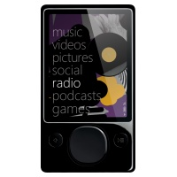

Zune Brings Powerful New Entertainment Features to Every Zune Portable Media Player With Software Release
Internet access provider Wayport enables wireless music downloads for Zune customers in Wi-Fi hot spots at more than 9,800 McDonald's restaurants.
By Microsoft Corporation, Published 16th September 2008
REDMOND, Wash. - Sept 16, 2008 Zune, Microsoft Corp.'s end-to-end music and entertainment service, today released its much anticipated free software update that will bring new features to every Zune portable media player. Revealed last week, the new software will allow Zune users to wirelessly stream and download music from the Zune Marketplace store on the go; tag and purchase songs directly from the built-in FM radio; and tap into new, personalized music recommendations and programming. To allow customers to take full advantage of the new wireless functionality, Zune today announced that it is working with high-speed Internet access provider Wayport Inc. to deliver Zune users free, wireless access to the Zune Marketplace from more than 9,800 participating McDonald's restaurants across the United States.
"Wayport is pleased to be working with Microsoft to make it easier for Zune users to access music on the go," said Dan Lowden, vice president of business development and marketing for Wayport. "Our ability to enable and manage applications and devices over converged networks creates exciting new opportunities for our clients to attract new customers whose digital lifestyle extends beyond their home and office."
More Colours and Custom Designs
Zune Originals, the online store designed to let consumers customise their Zune player with laser-engraved art and personal text, now also offers exclusive colour combinations. In addition to the recently announced Zune 16 and Zune 120 available in black at retailers nationwide, Zune Originals also will offer the Zune 16 in blue, red, pink and green as an online exclusive. In addition, Zune Originals is refreshing its collection of custom artwork with 14 eye-catching new designs from artists such as Rolito, MWM (Matt W. Moore), Ippei Gyoubu and Aya Kato to give consumers more options to personalise their Zune experience.
The Digital Content Consumers Want
In addition to launching Zune Channels, which push new music to subscribers' collections each week, and personalised music recommendations, Zune Marketplace also offers editorial features such as the Zune School Music Masters Program and the Xbox Gamer Central pages, as well as Instant Collections playlists to help consumers explore specific themes and genres. Zune Marketplace now offers more than 4 million songs, 80 percent of which are available as digital rights management (DRM)-free MP3s; 8,500 music videos; 3,000 episodes of popular TV shows; and more than 6,000 audio and video podcasts.
Zune customers have a choice in how they acquire music - they can pay per track or choose a Zune Pass subscription. Zune Pass subscribers can download or stream music from their Zune or computer interchangeably, all for a flat rate of $14.99 (U.S.) per month. To give people a chance to experience Zune Pass subscription, Zune is offering a free, 14-day trial to all new customers. More information is available at http://www.zune.net/setup.
Zune also now supports audiobook content from leading distributors including Audible Inc. Zune users can now explore more than 50,000 books, magazines and newspapers from more than 600 publishers and content providers at audible.com and sync it to their Zune. To commemorate the addition of audiobooks, Audible is offering all new and existing Zune owners a free copy of "Black River" by bestselling writer Dean Koontz.
New Software and Firmware
The Zune PC software is a free download that provides rich discovery and media management capabilities to help consumers make the most of their existing music collections in addition to providing access to the Zune Social and Zune Marketplace so they can add to it. To experience new features such as Buy from FM, wireless music downloads, Zune Channels, Picks personal recommendations, games and more, the new Zune PC software and device firmware are available for free download at http://www.zune.net.
Estimated retail pricing for the Zune device is as follows:
- 120 GB: $249.99 (U.S.)
- 80 GB: $229.99 (U.S.)1
- 16 GB: $199.00 (U.S.)
- 8 GB: $149.99 (U.S.)
- 4 GB: $129.99 (U.S.)1
More information on Zune and related images are available at www.zune.net/press.
About Zune
Zune is Microsoft's music and entertainment brand that provides an integrated digital entertainment experience. The Zune platform includes a line of portable digital media players, elegant software, the Zune Marketplace online store, and the Zune Social online music community, created to help people discover music. Zune is part of Microsoft's Entertainment and Devices Division and supports the company's software-based services vision to help drive innovation in the digital entertainment space. More information can be found online at http://www.zune.net/en-us/press.
1 A limited number of 80GB and 4GB devices remain in the channel, and those remaining will be available at this price.